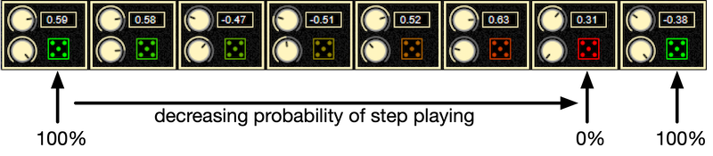

The SynthLab-WS example demonstrates the most complex of the DM synth examples, impelementing an 8-step, 4 lane wave sequencing synth based on the Korg Wavestate(TM). It includes an additional primary GUI panel that reveals the wave sequencer, where much of your sound design work will take place. All oscillators are fundamentally wavetable-based and as with the SynthLab-WT product, you may freely mix static and morphing wavetables where the aux EG is used as the primary hardwired morphing source. The modulation matrix is significantly different from the rest and allows you to re-trigger any of the three EGs from any modulation source, including the wave sequencer's step-sequencer modulation output lane that behaves in a similar fashion to any other step sequencer you've used that allows for adjustment of modulation values that may be applied to a variety of destinations.
Wave Sequencer Panel
Figure 1 shows the Wave Sequencer panel where you will do much of the work. This is described in detail in the synth book. Another great source is the Korg Wavestate user manual, which was used to develop the wave sequencer as well as some of the underlying paradigms that are in all synth flavors (e.g. the quantized LFOs). The wave sequencer here is a trimmed down version of the Korg impelmementation that leaves out only a couple of impelmentation details (in and out curvatures on the crossfade, and the ability to absorb timing information from steps that do not play).
Figure 1. SynthLab-WS Wave Sequencer Panel
Wavetable Cores
The WS synth uses all four wavetable cores with the following preferred index values that orders them for the presets. 0. ClassicWTCore
- MorphWTCore
- FourierWTCore
- SFTWTCore
There is a 5th bonus core called DrumWTCore whose preferred index is also set to 3 (same as SFX). If the DrumWTCore DLL or dylib is also present in the oscillator folder, it will replace the SFX core as it will be loaded first (this has to do with the Windows and MacOS functions that iterate through the folders to find the files – both are alphabetical so the "D" in drum will cause it to load first. This will screw up the presets as they are expecting the ordering above. Use the "spare_modules" folder as a stash place for the DrumWTCore file when auditioning the WS presets.
Notes and Rests
Each numbered step in the sequence has a primary control at the bottom of the timing block that sets the step's status as note (plays something) or rest (silent). Rests are inserted to break up the patterns. When used with probability (below) this can generate an infintely changing pattern in time (note or rest) and frequency (pitch or melody).
Probabilities
A central design component of Korg's wave sequencer is the probabilistic capabilities for each step in every lane. For the SynthLab implementation, only the mod and pitch lanes feature this control. The probability control sets the likelyhood of a given lane step to play (execute) or not. When a lane skips over a step, it holds the previous value from the last step that was executed.
the probability control goes from 0% (no chance of playing ever) at the full counterclockwise setting, to 100% (always plays) at the full clockwise position. To help you understand the probability, the color of the dice icon will change from green (100%) to red (0%) to various shades of brown and yellow (beween 1% and 99%); the figure below shows how the dice colors relate to the probability; for color-challenged users the knob location also imparts the same information.

- unlike the Korg Wavestate, this synth does not check for multiple non-playing steps in a sequence; if for example 3 or 4 steps did not play in sucession and the last actual step was a rest-type, then it may appear as if the synth is broken – it is really just being silent as programmed
- each loop control block also includes a probability switch (on/off) that will shuffle the lane's sequence of segments each time a loop endpoint is hit; unlike the other probability function (play or don't play) this function will alter the sequence of steps, scrambling them into a new sequence on each pass
- when you combine the lane probabilities and looping probabilities, you may acheive an endless cycle of melodies, rhythmic events, or sound effects that never truly repeat, just like the Wavestate instrument
| GUI Control Area | Functionality |
|---|---|
| Lane Status Meters | visual patterns that show the currently playing lane steps |
| Mod Lane | sets the mod value and probability for each step |
| Pitch Lane | sets the pitch value and probability for each step to create melodies |
| Timing Lane | sets the hold and crossfade times for each step (see synth book for details) |
| Mod Lane Loop Pitch Lane Loop Mod Lane Loop | sets start and end loop points and re-shuffling (probability, on/off) for each lane |
| Interp Mod | enable for smooth morphing mod values; disable for glitchy step-sequencer |
| Time Stretch/Shrink | use this control to speed up (counter clockwise) or slow down (clockwise) the entire sequence by +/- 500% |
Added Controls The SynthLab-WS wave sequencer contains a few controls not found on the Korg Wavestate's main panel. The RUN/PAUSE control lets you freeze the sequencer (PAUSE) for a realtime musical effect; try freezing the sequence then using the global tuning control to make the slowed-down or sped-up tape effects for the pre-drop build up. You may also solo a wave-lane's waveform with the solo function, which is useful for working on the patches in the Voice Edit panel.
Timing Lane The timing lane controls the speed of all other lane steps as well as the crossfading of the waveforms in the wave-lane. These controls are based heavily on the Wavestate. Each timing step is defined with hold and crossfade times. A waveform his held for some duration, then crossfaded into the next waveform in the sequence across some other duration. The Wavestate allows you to set these with musical rhythmic note durations (whole steps, dotted eighth triplets) or in absolute time (seconds). After experimenting, I found that the absolute time control is not useful for true musical sequencing with other instruments but is nice for very long stretched out evolving soundscapes that do not follow a preset time base. For the SynthLab-WS project, I only implement the note durations that are selected with the knob controls. When this is combined with the time stretch function, you can generate very long, slowly mutating sounds (HINT: add lots of feedback-delay) while still maintaining musical durations in the setup.
Wave Lane The wave lane simply selects the waveform and gain (amplitude) value for it. There is no per-step probability, but you may engage the loop probability to re-shuffle the waveforms on each loop passage. Figure 2 shows how the waveform selection works: for the WS example synth, all waveforms are combined for four of the wavetable cores (classic, morphing, Fourier, and sound effects) allowing for a selection of up to 64 different waveforms per step: note that the Fourier core is light on waveforms with only sine and parabola, so the list is not completely full, but of course you may change that in YOUR implementation!

Figure 2: the wave selection is actually an amalgam of all wavetable core waveforms concatenated together for up to 64 possible waveforms
Pitch and Mod Lanes These lanes allow you to adjust the pitch of each step for creating melodies, and the modulation value for each step to alter other modulation destinations in the mod matrix. Use the pitch controls in combination with the coarse tuning controls in the Voice Edit panel to create harmonized melodies.
Voice Edit Panel
Figure 3 shows the Voice Edit panel which contains a few of the blocks common to all SynthLab examples: two LFOs, three EGs, two filters, and a global control area. The SynthLab-WS example uses the WSOscillator, which contains four internal oscillators that are used in a round-robin fashion as detailed in the synth book. However, to add even more musical complexity, I added a second WSOscillator object that is used as a detuned or harmonized pitch source, with independently adjustable hard sync (static and morphing wavetables), morphing intensity (morphing wavetables only) and panning controls.
You may adjust the coarse tuning in semitones for each step, allowing you to harmonize that step's pitch. You may also adjust the fine-tuning in order to create the fat analog detuned waveforms we all know and love. This simple pair of controls has a massive influence on the output of the device. These tunings will stay with the oscillator pairs used for rendering and can create beautiful harmonized musical lines or horrifyingly atonal sound-scapes. Notice that this panel also includes a visual representation of the wave sequencer state as a set of vertical meters that move from top to bottom, round and round as each loop completes in the sequence.
Figure 3: the WS Voice Edit panel is very different from the others and reveals the double-oscillator nature of the synth; the lane meters move from top to bottom as the sequence advances
Modulation Matrix
Figure 4 shows the modulatiom matrix panel, which is very different from the others. First notice that the oscillator pitch and "unique" modulations are no longer grouped as OSC 1,2,3 and OSC 4. Instead, there are just two destinations, All Osc Freq for pitch modulation, and All Osc Unique for the oscillator dependent modulation (hard sync for static wavetable and morph for morphing wavetable) and these work just like the others, only with a single intensity control for all oscillators.
There are new EG retgriggering destinations that will reset and re-start the EGs. Due to the cyclic nature of the sequencer, when using morphing waveforms under normal conditions, the morphing will eventually stop when the aux EG hits the sustain point. Likewise, the filter EG will eventually settle at the sustain level and hold modulation of its destinations. In order to make these modulations dynamic so they may repeat with a long, ever evolving wave sequence, you may re-trigger any of the EGs using the appropriate column and a modulation source. This allows you to re-trigger the EGs sequentially so that their effect is repeated as the note event progresses:
- Aux EG retrigger: re-triggers the morphing modulation source as well as anything else that uses the Aux EG
- Filter EG retrigger: re-triggers the filter EG as well as anything else that uses it
- Amp EG retrigger: re-triggers the amp EG, allowing you to imprint yet another global EG contour to the overall wavesequencer output
Figure 4 shows several of these re-trigger modulation routings. Notice that LFO2 is used to re-trigger the AuxEG for all morphing wavetable oscillators while the wave sequencer's modulation lane output value is used to retrigger all three (3) EGs in the synth. For EG retriggering, the EG will reset back to the start level and start phase when the trigger value rises above 0.5 (unipolar, normalized). Use caution when re-triggering the Amp EG as it may leave clicks in the output for fast attack settings. By adjusting the source and destination intensity values, you may find just the right balance of re-triggering and if using the wve sequender's modulation output, you may re-trigger all EGs in a synchronized manner along with the wave sequencing.
Figure 4: SynthLab-WS modulation matrix panel